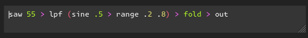

after building a basic s-expression parser and interpreter, let's extend the syntax to allow expressing signal flow graphs (like audio graphs) without getting into paren hell. for example:
(out (fold (lpf (saw 55) (range (sine .5) .2 .8))))
in kabelsalat, this could be expressed as
saw(55).lpf(sine(.5).range(.2, .8)).fold().out()
to get a similar order of operations, we could introduce a ">" operator for function composition:
(saw 55 > lpf (sine .5 > range .2 .8) > fold > out)
assuming ">" is a valid character of a plain node, this is still valid syntax from our parsers perspective. to make it do what we want, we need to rewrite each list's children to resolve the ">" operators.
the idea is that the left side of each operator is used as the first argument of the list on the right side. in addition, i've added a little more sugar to allow the outermost list to drop the parens. here's the result:
while the interpreter is the same as before, the parser now has a "resolve_pipes" method that rewrites list children + "parse" now supports multiple top level expressions:
I'm pretty happy with that little language, as it's fairly simple to parse and it could be used as an alternative, probably more portable input for kabelsalat.